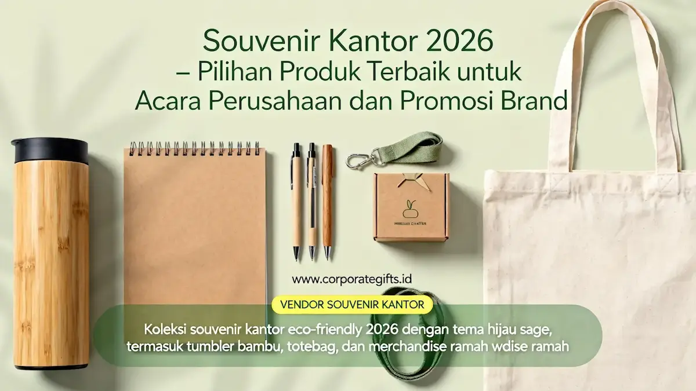

Corporate Gifts ID - Souvenir kantor 2026 yang paling diminati perusahaan adalah produk fungsional berbasis teknologi, seperti smart notebook, tumbler premium, dan wireless charger yang dipersonalisasi dengan logo brand.
Pergeseran ini terjadi karena perusahaan kini menilai suvenir sebagai alat komunikasi brand yang bernilai strategis, bukan sekadar pelengkap seremonial acara. Melalui pengadaan yang terkurasi, suvenir kantor mampu menghadirkan retensi brand yang berkesinambungan serta mempererat sinergi bisnis.
CorporateGifts.ID menyediakan katalog lengkap aneka kategori suvenir korporat terkini dengan opsi kustomisasi logo presisi dan packaging eksklusif untuk memenuhi kebutuhan instansi maupun swasta.
Kenapa Souvenir Kantor 2026 Berubah Arah?
Souvenir kantor berubah arah karena kalangan manajemen kini memperlakukan setiap produk sebagai instrumen investasi jangka panjang dalam membina relasi dengan klien bisnis dan merawat loyalitas karyawan.
Barang yang hanya memikat secara visual di awal namun tidak memiliki nilai pakai harian terbukti lekas tersingkir ke dalam laci penyimpanan. Perusahaan membutuhkan suvenir bernilai utilitas nyata agar brand recall terus berulang setiap kali produk digunakan dalam aktivitas profesional.
Dari Produk Generik ke Produk Fungsional
Perusahaan kini jauh lebih selektif dalam memilih suvenir kantor. Barang yang sekadar cantik dilihat tanpa fungsi pendukung alur kerja tidak lagi memadai untuk menjawab ekspektasi audiens modern.
Item yang paling banyak diperebutkan adalah perlengkapan pendukung produktivitas kerja harian, seperti smart notebook modern, tumbler premium insulated tahan panas-dingin, serta desk organizer meja kerja terpadu.
Personalisasi sebagai Standar Wajib
Pemberian sentuhan custom logo perusahaan, ukir nama personal penerima, dan kemasan boks khusus bukan lagi sekadar nilai tambah pelengkap di tahun 2026. Semua elemen ini telah bertransformasi menjadi standar wajib yang harus dipenuhi dalam setiap paket suvenir instansi.
Personalisasi menghadirkan keterikatan emosional mendalam sekaligus menegaskan apresiasi tulus dari pihak manajemen kepada penerimanya.
4 Kategori Souvenir Kantor Paling Dicari Perusahaan di 2026
Terdapat empat kategori besar yang mendominasi tren suvenir kantor 2026. Masing-masing kategori memiliki fungsi spesifik sehingga memudahkan panitia pengadaan menyesuaikan pilihan produk dengan agenda kegiatan dan karakteristik audiens sasaran:

Pilihan souvenir kantor fungsional dan merchandise teknologi untuk branding korporat yang profesional.
1. Office Essentials untuk Kebutuhan Harian
Office Essentials merupakan opsi paling ideal untuk kegiatan workshop kerja, seminar korporat, serta paket onboarding karyawan baru karena memiliki daya guna harian yang konsisten dan bebas dari pergeseran tren musiman:
- Pulpen premium metal: Dilengkapi isi ulang tinta berkualitas dan finishing ukir laser logo presisi.
- Buku agenda profesional: Hardcover dengan jilid elegan untuk menunjang pencatatan rapat rutin.
- Tumbler stainless steel: Desain minimalis berdinding ganda untuk menjaga kesegaran minuman seharian.
- Desk organizer: Perapian alat tulis berbahan kayu mahoni atau akrilik bening modern.
2. Merchandise Teknologi untuk Citra Modern
Perangkat teknologi cerdas menjadi kategori paling diminati perusahaan rintisan maupun korporasi multinasional karena langsung memancarkan citra modern yang inovatif. Kategori ini sangat cocok disematkan dalam konferensi industri, pameran produk B2B, atau hadiah loyalitas mitra dagang:
- Flashdisk kartu custom: Praktis disimpan di dalam dompet untuk mempermudah transfer dokumen digital.
- Speaker bluetooth mini: Suara jernih dengan ukuran kompak yang mudah dibawa saat bepergian.
- Wireless charging pad: Pengisi daya nirkabel meja kerja yang rapi tanpa lilitan kabel.
- Power bank custom: Kapasitas besar dengan sertifikasi keamanan pengisian daya gawai pintar.
3. Executive Gifts untuk Acara Formal
Executive Gifts dipilih secara selektif oleh manajemen saat hendak memberikan penghormatan istimewa kepada tamu kehormatan, pembicara utama, jajaran direksi, maupun mitra strategis korporat. Kategori ini kerap dihadirkan dalam seremoni perayaan tahunan atau jamuan makan malam kenegaraan:
- Emblem dan lencana logam: Menggunakan plat kuningan atau pewter berlapis sepuh emas eksklusif.
- Plakat kristal optik: Dibuat dengan ukiran laser 3D internal berketepatan tinggi.
- Jam meja metalik: Aksen meja pimpinan yang menghadirkan wibawa dan kesan profesional berkelas.
4. Lifestyle Products untuk Kesan Kasual
Lifestyle Products menawarkan fleksibilitas pemakaian tinggi karena dapat digunakan secara leluasa di luar lingkungan kerja formal. Kategori ini memberikan sentuhan kasual yang ramah untuk kegiatan gathering komunitas perusahaan, family day, atau program promosi umum:
- Totebag kanvas premium: Desain tebal berfuring yang tahan lama untuk aktivitas belanja harian.
- Botol minum sport: Praktis menemani aktivitas olahraga dan kebugaran tim.
- Pouch kulit sintetis: Wadah ringkas untuk mengorganisasi perlengkapan kosmetik maupun kabel gawai.
Bagaimana Cara Menentukan Souvenir Kantor yang Tepat Sesuai Tujuan Acara?
Pengadaan suvenir kantor yang sukses bertumpu pada pertimbangan tiga pilar utama: profil penerima, ketersediaan anggaran (budget), serta keselarasan dengan identitas merek. Analisis menyeluruh atas ketiga aspek ini memastikan anggaran yang dikeluarkan memberikan laba atas investasi (ROI) promosi yang optimal.
Memahami Profil Penerima dan Kebutuhan Acara
Karakteristik demografis dan posisi struktural penerima menjadi kompas utama pemilihan kelas suvenir. Bingkisan suvenir bagi klien korporat VIP tentu membutuhkan sentuhan kemewahan yang berbeda dibanding paket welcome kit karyawan baru yang lebih menitikberatkan pada kelengkapan operasional harian.
Menentukan Budget yang Realistis
Anggaran yang tepat tidak selalu berarti memilih produk dengan banderol tertinggi. Kuncinya terletak pada efisiensi biaya per unit melalui pemilihan material yang awet dan alokasi pesanan berjenjang (tiered budgeting) yang proporsional dengan skala acara.
Memastikan Kesesuaian dengan Identitas Brand
Institusi yang bergerak di sektor digital dan perbankan modern umumnya memilih merchandise teknologi untuk mempertegas citra modern. Sementara organisasi yang gencar mengampanyekan keberlanjutan lingkungan hidup akan lebih tepat mengadopsi suvenir eco-friendly berbahan daur ulang.
Tabel berikut memetakan korelasi antara jenis kegiatan perusahaan dengan rekomendasi kategori suvenir kantor yang paling efektif:
| Jenis Acara Perusahaan | Rekomendasi Kategori Souvenir |
|---|---|
| Seminar & Workshop | Office Essentials, Merchandise Teknologi |
| Gathering & Outing Karyawan | Lifestyle Products, Botol Sport & Totebag |
| Onboarding Karyawan Baru | Paket Office Essentials Lengkap & Agenda Kerja |
| Penghargaan / Seremoni Formal VIP | Executive Gifts, Plakat Logam & Jam Meja |
Tren Apa yang Mendorong Pergeseran Preferensi Souvenir Kantor di 2026?
Perubahan preferensi suvenir korporat pada tahun 2026 digerakkan oleh tiga faktor kunci: meningkatnya kesadaran ekologis, kebutuhan personalisasi mendalam, dan kemasan bercerita (packaging storytelling) yang berkesan kuat.
Kecenderungan pada Produk Ramah Lingkungan
Konsep green corporate kini menjadi komitmen nyata perusahaan modern. Penggunaan bahan baku daur ulang, bambu terbarukan, hingga kemasan bebas plastik menjadi daya tarik utama yang diapresiasi tinggi oleh generasi pekerja muda dan mitra internasional.
Packaging Eksklusif sebagai Storytelling
Kemasan tidak lagi sekadar kotak pembungkus, melainkan media pembuka pengalaman (unboxing experience). Kartu pesan apresiasi bertanda tangan direksi yang disisipkan di dalam boks hardcover mampu menumbuhkan kedekatan emosional yang tulus.
Souvenir sebagai Bagian dari Kampanye Jangka Panjang
Perusahaan yang konsisten menerapkan pedoman desain visual terpadu pada seluruh rangkaian merchandisenya berhasil mengukuhkan posisi merek di benak publik secara berkelanjutan sepanjang tahun.
FAQ Seputar Souvenir Kantor 2026
Kesimpulan
Souvenir kantor 2026 bukan lagi sekadar pelengkap acara, melainkan representasi langsung dari kualitas dan karakter profesional institusi Anda. Perusahaan yang mengadopsi produk fungsional, personal, dan ramah lingkungan akan memperoleh dampak promosi yang berlipat ganda.
Ingin melihat ragam pilihan souvenir kantor 2026 yang tepat untuk agenda perusahaan Anda? Jelajahi katalog resmi kami di Corporate Gifts ID atau hubungi tim konsultan kami untuk mendiskusikan kurasi paket terbaik dengan penawaran harga pabrik kompetitif.